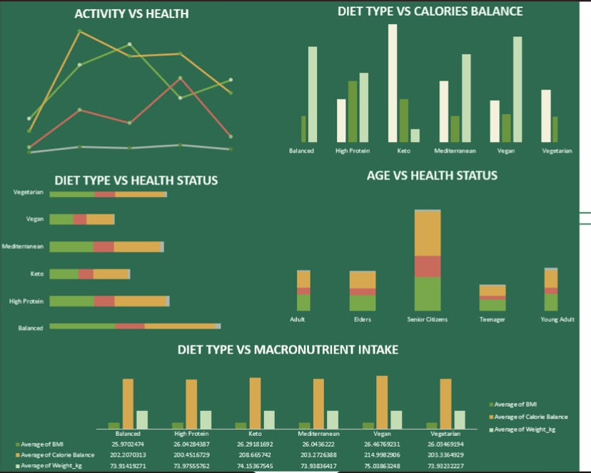

Nutrition • Excel • Power Query
Healthy Diet & Calorie Intake
Excel · Power Query · Data Analysis
An interactive nutrition analytics project exploring calorie intake, physical activity, BMI categories, diet types, macronutrients and demographic patterns.
41.66%
Of the analysed population classified as overweight
+531 kcal
Average calorie difference for the obese group
Nutrition
Calories, protein, carbohydrates and fat analysed
BMI
Weight-status patterns explored across categories
01 / Overview
About the project
This project analyses dietary and lifestyle data to understand relationships between calorie intake, physical activity, BMI, diet type, macronutrient consumption and demographic characteristics. The analysis was designed to turn raw nutrition data into clear, actionable insights.
02 / Dashboard
Main Dashboard

03 / Additional Analysis
Secondary Dashboard

04 / Insights
Key Findings
41.66% of the analysed population was classified as
overweight, highlighting the scale of excess-weight
representation within the dataset.
The obese group recorded an average calorie difference of
approximately +531 kcal, indicating a notable gap between
calorie intake and the comparison baseline used in the
analysis.
Calorie intake, activity levels, BMI and dietary patterns
showed useful differences across demographic and lifestyle
groups.
These findings describe patterns within the analysed dataset
and should not be interpreted as medical advice or proof of
causation.